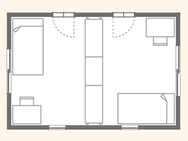
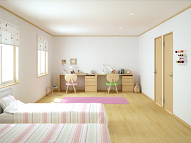

- TOP
- 可動間仕切収納・子ども部屋の間仕切り
Child可動間仕切収納で
手軽に子ども部屋をアレンジ
心も体も日々変化する子どもには、成長の度合いに応じた生活空間が必要です。
とくに個室、勉強部屋の問題はなかなか悩ましいところ。
こちらでは、「子ども部屋をどう作るのが理想的なのか」についてご説明します。
「ce-fit(セフィット)」シリーズの「可動間仕切収納」を活用した
個室アレンジの例もご紹介しますので、参考にしてみてください。
子ども部屋の間取りでの悩み
「子どもが生まれたら勉強は個室ではなく、リビングやダイニングのテーブルでさせよう」という若いご夫婦が増えています。確かに、親の目が届くところで勉強しているほうが学習に集中できるという説もあり、必要なら近くにいる母親などに質問できるので都合がよいかもしれません。実際、小学校低学年までは多くの家庭でこうしたシーンが一般的です。
しかし、子どもが思春期を迎え自立心・独立心が芽生えると、どうしても個室を欲しがるようになります。そういった事情もあり、きょうだいで1室をシェアできるのも小学校低学年くらいまででしょう。そうなると、新築時に勉強部屋（子供部屋）をどうプランニングするかが悩ましい問題となります。
最初からきょうだいの数だけ部屋をつくるのか、まずは広い1室を用意しておいてのちのちリフォームして部屋を分割するのか――。前者の場合、家族の絆を感じさせることが必要な時期に子どもを孤独にさせてしまうリスクがあります。後者のケースでは、将来的にリフォームで建物に手を入れる必要が出てきます。
こうした課題を解決するには、「可動間仕切収納」を利用するのがよいでしょう。最初に広い1室を確保しておき、子どもの成長に合わせて可動間仕切収納を動かして部屋を二分すれば、リフォームの負担なくして完全な個室を実現できます。
また、子供が巣立った後に、1ルームとして夫婦や来客のスペースに活用するなど、有効に空間をつかい続けられる可能性が広がります。
子ども部屋の間取りについて
簡単に考えがちな子ども部屋ですが、じつはさまざまな間取り・プランがあります。こちらでは代表的な4つのパターンをご紹介します。
設計時からプランする場合
- 1人ずつ個室を設ける
-
完全個室のため、
とくに小さなお子さまの場合は
孤独を感じやすくなりがち。また、子どもが独立した後は活用しにくくなり、
物置と化す可能性も大きいと言えるでしょう。
- 共有スペースを設けた間取り
-

きょうだいに個室を与える場合は、
ただし、子どもが独立した後は
互いが交流できる共有スペースを設けてあげると
孤独にならずに済みます。
活用しにくくなるので物置と化す可能性も……。
広いワンルームからスタートする場合
- 可動式収納で間仕切りした間取り
-

天井から床まで隙間なく
空間を仕切れる可動間仕切収納なら、
設置するだけで広い1室を簡単に二分し、
個室にできます。お子さまの独立後は、
可動間仕切収納を移動することで
ご夫婦の書斎や趣味部屋などにアレンジ可能。
完全な個室を作り出せる手法ですが、
遮音性は右の間仕切り壁と比べてやや劣ります。
- 壁工事を行い間仕切りした間取り
-
リフォームによって
間仕切り壁を新たに追加する手法です。
建物に手を入れ、
1枚の壁で完全に空間を隔てられるので、
光漏れや音漏れなどが気にならずに済みます。ただし、将来的にお子さまが独立したとき、
再びワンルームにしようとすると
撤去工事の手間や費用が必要になります。
ワンルームにドアを2箇所設けて
フレキシブルな間取りに
子どもの成長に合わせ、可動間仕切収納で1室を2室に間仕切りするのがもっと手軽で、理想的な個室のつくり方です。その場合、子ども部屋を想定しているワンルームにあらかじめドアを2つ設置しておくと大がかりな工事が不要になります。
ドアとドアの壁幅寸法が広い部屋の場合
十分なスペースがあるため、可動間仕切収納だけで完全に個室化が可能です。
なお、お子さまが小さいときは可動間仕切収納1台で緩やかに仕切り、
上の子が小学校高学年を迎えたら2台1組にして「完全個室化」するとよいでしょう。
それなら、お子さまが独立した後も可動間仕切収納を移動して壁側に寄せることで、
元の広いワンルームを簡単に復元できます。

DATA
【MP1-12 W1264×2】
| 本体 |
|
|---|---|
| オプション |
|
※掲載価格は希望小売価格です。 消費税・施工費は含まれておりません。
ドアとドアの壁幅寸法が狭い部屋の場合
なお、ドアとドアの壁幅寸法が狭く、可動間仕切収納を直に置くことができない場合は、オプションの「袖壁パネル」を組み合わせて使用します。
- 
DATA
【MP1-12 W1312×1＋MP1-12(B) W1312×1】
| 本体 |
|
|---|---|
| オプション |
|
※ 掲載価格は希望小売価格です。 消費税・施工費は含まれておりません。